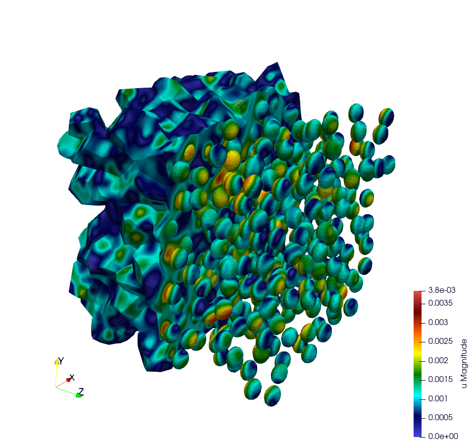

Representative Volume Element of Combustible Mixed Oxides for Nuclear Applications
This simulation represents an RVE of MOx (Mixed Oxide) material under uniform macroscopic deformation. The aim of this simulation is to reproduce and compare the results obtained by (Fauque et al., 2021; Masson et al., 2020) who used an FFT method. (source code: ex7)
Problem solved
Problem : RVE MOx 2 phases with elasto-viscoplastic behavior laws
Parameters :
start time = 0
end time = 5s
number of time step = 40
Imposed strain tensor :
[ -a/2 , 0 , 0 ]
eps = [ 0 , -a/2 , 0 ]
[ 0 , 0 , a ]
with a = 0.012
Solver : HypreGMRES
Preconditioner : HypreBoomerAMG
Moduli and Norton behavior law parameters :
[ parameters , inclusions , matrix ]
[ Young Modulus , 8.182e9 , 2*8.182e9 ];
[ Poisson Ratio , 0.364 , 0.364 ];
[ Stress Threshold , 100.0e6 , 100.0e12 ];
[ Norton Exponent , 3.333333 , 3.333333 ];
[ Temperature , 293.15 , 293.15 ];
Element :
- Family H1
- Order 2

Illustration of a RVE with 634 spheres after 5 seconds.
How to run the simulation “RVE MOX”
Build the mesh
The mesh is generated with MEROPE and GMSH through the following steps:
First step, use MEROPE to generate a
.geofile using the RSA algorithm. Scripts are in directoryscript_merope. Command line:
# generate .geo file with MEROPE
python3 script_17percent_minimal.py
Second step, use GMSH to mesh the geometry. Files
.geoare in the directoryfile_geo. Command line:
# generate the .msh file with GMSH
gmsh -3 OneSphere.geo
Run the simulation
Run a minimal version of the simulation
In order to run the simulation in sequential computing mode, use the command line:
# run the simulation by specifying the mesh with --mesh option
./mox2 --mesh OneSphere.msh
With MPI + Petsc:
mpirun -n 2 mox2 -m mesh/OneSphere.msh -o 1 --use-petsc true --petsc-configuration-file petscrc
Available options
To customize the simulation, several options are available, as detailed below.
Command line |
Description |
|---|---|
–mesh or -m |
Specify the mesh “.msh” used (default = inclusion.msh) |
–refinement or -r |
Refinement level of the mesh (default = 0) |
–order or -o |
Finite element order (polynomial degree) (default = 2) |
–verbosity-level or -v |
Choose the verbosity level (default = 0) |
–post-processing or -p |
Run post processing step (default = 1) |
–use-petsc |
Activate PETSc if PETSc is available |
–petsc-configuration-file |
Name of the Petsc source file |
Example of customized simulation:
# run the simulation in sequential computing mode with various options
./mox2 -r 2 -o 3 --mesh OneSphere.msh
Parallel computing mode
The simulation can be run in parallel computing mode by using the command:
# run the simulation by specifying the mesh with --mesh option
mpirun -n 12 ./mox2 --mesh 634Spheres.msh
Simulation can be run on supercomputers. The command depends on the server manager. For example, on Topaze, a CCRT-hosted supercomputer co-designed by Atos and CEA, the commands are :
ccc_mprun -n 8 -c 1 -p milan ./mox2 -r 0 -o 3 --mesh OneSphere.msh
ccc_mprun -n 2048 -c 1 -p milan ./mox2 -r 2 -o 1 --mesh 634Sphere.msh
Post-processing of simulation data
The aim of this exercise is to reproduce the simulation results of
(Fauque et al., 2021; Masson et al., 2020). To this end, the average
stresses in the z-axis direction (SZZ) will be analyzed. The reference
values, obtained by (Fauque et al., 2021; Masson et al., 2020), can be
found in the directory results, file res-fft.txt (Average stress
versus time).
Extract simulation data from MMM
The avgStress post-processing file generated by MMM contains average
stress values as a function of time, by material phase. MMM simulation
data are available: results/res-mfem-mgis-onesphere-o3.txt and
results/res-mfem-mgis-634sphere-o2.txt.
For example, the average stress SZZ over the RVE (composed of 83% matrix and 17% inclusion) can be calculated with the awk command under unix:
awk '{if(NR>13) print $1 " " 0.83*$4+0.17*$10}' avgStress > res-mfem-mgis.txt
Display results with gnuplot
gnuplot> plot "res-fft.txt" u 1:10 w l title "fft"
gnuplot> replot "res-mfem-mgis.txt" u 1:2 w l title "mfem-mgis"